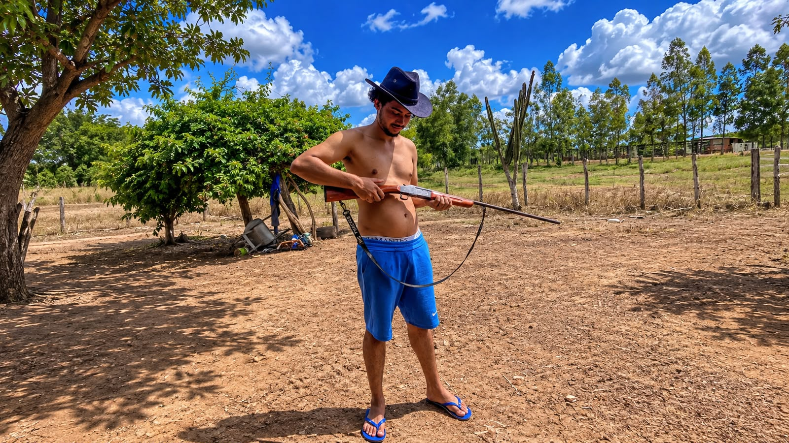
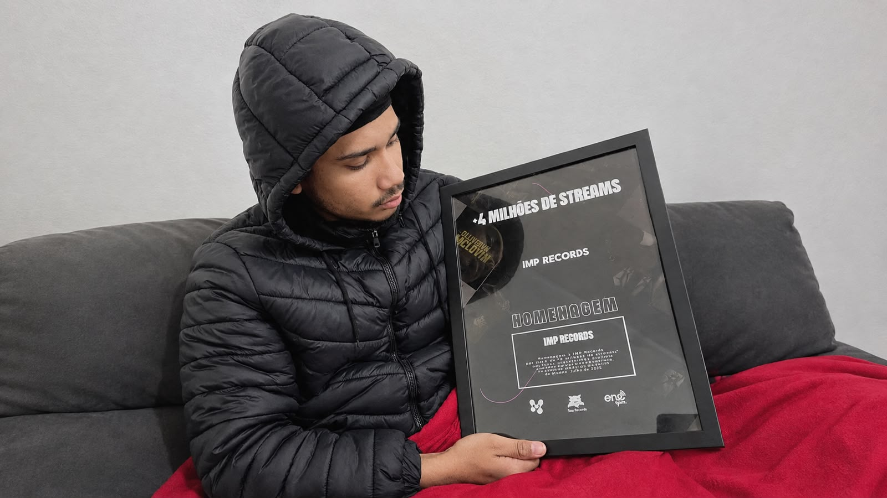
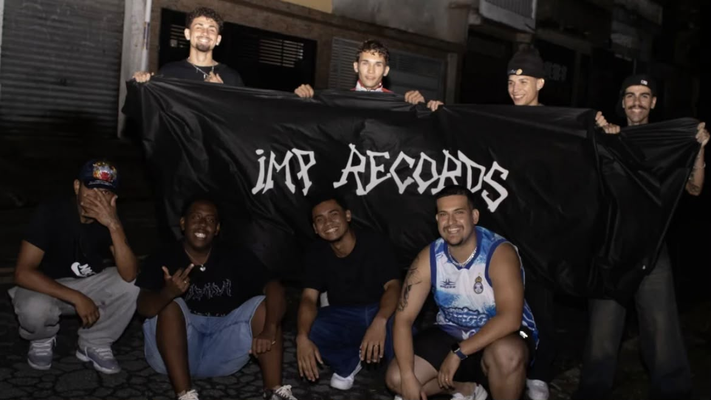
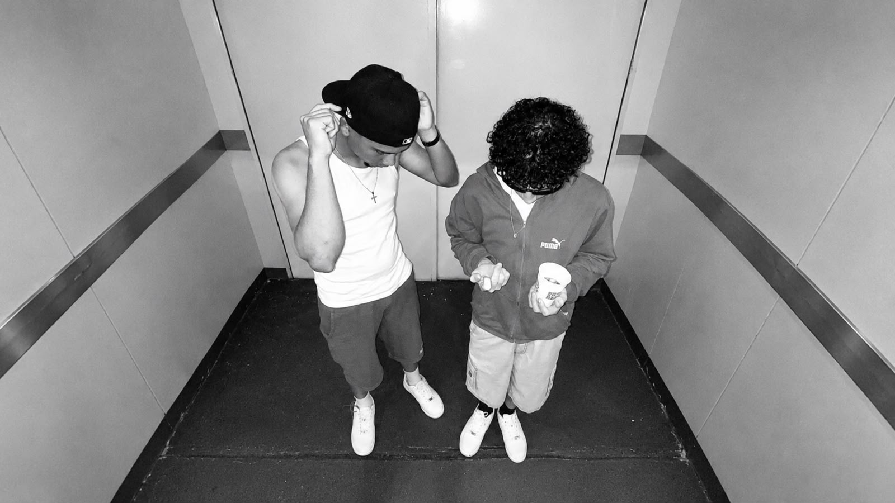

ÁLBUM CRIADO · 2020
OUVIR NO SPOTIFY ↗
TWIZ
FUNDADOR DA IMP RECORDS · MARANHÃO, BRASIL
RAÍZES DO INTERIOR.

Twiz, de nome verdadeiro, Thiago dos Santos Martins, é um artista independente natural de Miranda do Norte, interior do Maranhão, onde nasceu e cresceu na zona rural. Carrega em sua história as raízes do interior, uma vivência marcada pela simplicidade e pela identidade de quem se reconhece como um verdadeiro “cabra do mato”.
O INÍCIO NA MÚSICA.
Sua trajetória na música começou em 2020, quando despertou seu interesse pelo trap. Inspirado por vídeos, produções musicais e artistas que acompanhava na cena, começou a enxergar nesse gênero uma oportunidade de expressão artística e de construção da própria identidade.
O NASCIMENTO DA IMP RECORDS.

Movido por essa paixão e pelo desejo de desenvolver algo independente, decidiu criar a IMP RECORDS, uma iniciativa que representaria sua visão musical, seus objetivos e sua vontade de construir um espaço próprio dentro da música.
MAIS QUE UM NOME.
Foi nesse processo que nasceu Twiz, sua identidade artística. Mais do que um nome, Twiz passou a representar uma personalidade, uma assinatura e uma forma própria de se posicionar musicalmente. Embora seu nome de registro seja Thiago, escolheu construir uma identidade que pudesse carregar sua essência e representar sua caminhada.
PROJETOS QUE MARCAM CADA FASE.
Ao longo de sua caminhada artística, Twiz desenvolveu três projetos em formato de álbum, cada um criado em um momento diferente de sua trajetória e representando uma etapa de sua construção musical.
ÁLBUM CRIADO · 2025
OUVIR NO SPOTIFY ↗
TWIZ
Um projeto que representa o próprio nome e a identidade artística do artista.
ÁLBUM CRIADO · 2026
OUVIR NO SPOTIFY ↗
TODO MUNDO ODEIA O TWIZ
DESAFIOS E PERSISTÊNCIA.
Ao longo dessa trajetória, desenvolveu seu próprio bordão e buscou estabelecer uma presença na cena independente. Mesmo sem alcançar o reconhecimento e a relevância que inicialmente imaginava, sua experiência representa uma jornada de iniciativa, criatividade e persistência.
ANTES DO TRAP, JÁ EXISTIA UMA PAIXÃO.
Desde pequeno, Thiago, antes mesmo de se tornar conhecido como Twiz, já carregava uma forte ligação com o reggae. Influenciado pela família, pelos amigos e, principalmente, pela região onde nasceu e cresceu, desenvolveu uma paixão pela cultura reggae, que sempre fez parte de sua identidade.
Essa conexão foi tão importante que, antes mesmo da criação da IMP RECORDS, já existia um projeto dedicado exclusivamente ao reggae maranhense: a IMP ROOTS. Foi ali que começaram a ser construídas algumas das raízes musicais que, mais tarde, também fariam parte da história da gravadora.
UMA HISTÓRIA EM CONSTRUÇÃO.
Twiz é o reflexo de alguém que veio do interior do Maranhão e encontrou na música uma maneira de transformar suas influências, experiências e ambições em identidade artística.
Sua história ainda está em construção, assim como seus projetos e sua relação com a música. Mais do que os resultados alcançados até aqui, sua trajetória é marcada pela decisão de começar, criar sua própria estrutura e buscar um espaço por meio daquilo em que acredita.
UMA IDEIA QUE GANHOU VOZ PRÓPRIA.

Com o passar do tempo, a IMP RECORDS deixou de ser apenas um projeto idealizado por uma pessoa e se transformou em uma estrutura independente que reúne artistas, ideias e diferentes caminhos musicais. Nascida no interior do Maranhão, a gravadora construiu sua identidade a partir da iniciativa de criar oportunidades, fortalecer a cena independente e dar espaço a quem acredita na própria arte.
Ao longo dessa caminhada, a IMP aproximou artistas como Twiz, OlliverVn e Lowest, além de nomes que também fizeram parte de sua trajetória, como DINGY!, L$hock e Gabriel Leal. Cada artista trouxe sua personalidade, suas referências e sua contribuição, ajudando a ampliar o universo musical da gravadora. Essa caminhada criou conexões que ultrapassam o Maranhão e alcançam lugares como São Paulo, Goiás, Bahia, Sergipe e Minas Gerais.
Hoje, a IMP RECORDS representa mais do que um nome ou uma plataforma de lançamentos: é o resultado de anos de trabalho, colaboração e persistência. Sua história continua sendo construída por cada pessoa que chega, contribui e leva adiante a ideia que nasceu de forma independente.
MAIS QUE UM PROJETO, UMA IRMANDADE.

No começo, a IMP RECORDS tinha apenas a mim como fundador e dono. Com a chegada de OlliverVn, porém, a história começou a ganhar um novo capítulo. Ao longo do caminho, construímos uma irmandade que foi muito além da música: nasceu uma parceria baseada em confiança, dedicação e objetivos em comum.
Com o passar dos anos, o esforço, o comprometimento e a contribuição artística de OlliverVn foram se tornando parte importante da construção da IMP RECORDS. Como reconhecimento dessa caminhada, ele recebeu a oportunidade de integrar a sociedade e se tornar também um dos donos da gravadora. Hoje, a IMP representa não apenas uma ideia que comecei sozinho, mas também uma história construída por pessoas que acreditaram nela e fizeram parte do seu crescimento.
“DA ZONA RURAL DO MARANHÃO PARA A MÚSICA INDEPENDENTE.”
ESSA É A
ORIGEM DE TWIZ.
UMA HISTÓRIA QUE AINDA ESTÁ SENDO ESCRITA.
IMP RECORDS © 2026